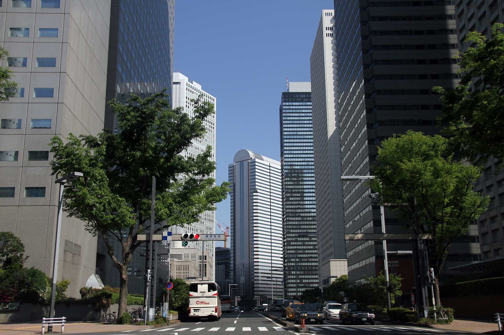

OBP（大阪ビジネスパーク）
26haの敷地を誇る大阪の新都心。企業のオフィスのほか、ホール、ショッピングやスポーツ施設なども集中。

営業時間
各施設により異なる
休日
各施設により異なる
OBP（大阪ビジネスパーク）は、読売テレビ、住友生命、KDDI、東京海上日動火災、富士通、日本電気など大手企業がオフィスを構える大阪の新都心。26haの敷地にはTWIN21、IMP（インターナショナル・マーケット・プレース）などオフィスビルをはじめ、西日本最大規模をもつ大阪城ホール、クラシック音楽専用の「いずみホール」、など文化を創造するイベント関連施設、そしてショッピングやスポーツ施設、ホテルなども集中している。最寄り駅はOsaka Metro長堀鶴見緑地線、大阪ビジネスパーク駅から徒歩すぐ。
住所
〒 540-6131 大阪市中央区城見2-1-61（ツイン21MIDタワー31F）
アクセス
Osaka Metro長堀鶴見緑地線「大阪ビジネスパーク駅」より徒歩1分、
JR大阪環状線・Osaka Metro・京阪電鉄「京橋駅」より徒歩5分
電話番号
06-6946-1048／06-6946-1310（大阪ビジネスパーク開発協議会事務局）
FAX
06-6946-1048